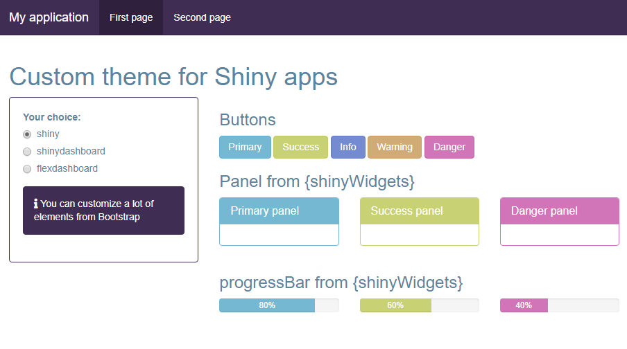

Create fresh themes for use in {shiny} & {shinydashboard} applications and {flexdashboard} documents.
shiny
Create new themes to use in shiny applications with fluidPage or navbarPage. From the default theme :

Obtain this :

This theme was creating with following code:
create_theme(
theme = "default",
bs_vars_nav(
default_bg = "#3f2d54",
default_color = "#FFFFFF",
default_link_color = "#FFFFFF",
default_link_active_color = "#FFFFFF"
),
bs_vars_color(
gray_base = "#354e5c",
brand_primary = "#75b8d1",
brand_success = "#c9d175",
brand_info = "#758bd1",
brand_warning = "#d1ab75",
brand_danger = "#d175b8"
),
bs_vars_state(
success_text = "#FFF",
success_bg = "#c9d175",
success_border = "#c9d175",
info_text = "#FFF",
info_bg = "#3f2d54",
info_border = "#3f2d54",
danger_text = "#FFF",
danger_bg = "#d175b8",
danger_border = "#d175b8"
),
bs_vars_wells(
bg = "#FFF",
border = "#3f2d54"
),
output_file = "www/mytheme.css"
)Use the created theme like this:
 Victor Perrier
Victor Perrier Fanny Meyer
Fanny Meyer